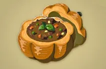

Lunch and Dinner
Meals
Salmon Meuniere
 $8.80
$8.80
The crispy skin of this fried hearty salmon puts its texture in a class all of its own. 700 calories
Gourmet Poultry Curry
 $7.20
$7.20
Once served in Hyrule Castle, the poultry used in this dish is of immensely high quality. 800 calories
Meat-Stuffed Pumpkin
 $5.90
This hollow, meat-filled pumpkin is a local specialty of Kakariko Village. 600 calories
Tomato Mushroom Stew
 $3.40
$3.40
A dish of fragrant mushrooms simmered with tomato. Healthy and rich in fiber. 750 calories
Pepper Steak
 $3.80
$3.80
The meat has been cooked in crushed peppers to accent its natural taste. 600 calories
Cheesy Meat Bowl
 $5.90
$5.90
A high-calorie dish with meat and plenty of cheese. A great dish for very hungry diners. 900 calories
Desserts
Fruitcake
 $2.80
$2.80
Making ample use of fruits found all over Hyrule, this cake is a must for celebrations. 800 calories
Cheesecake
$3.40
A rich, moist, flavorful dessert with a Hateno cheese base. 800 calories
Drinks
Spicy Elixir
 $0.43
$0.43
Grants a low-level warming effect, increasing your resistance to cold environments. Very useful when exploring snow-covered mountains. 60 calories
Chilly Elixir
 $0.43
$0.43
Grants a low-level cooling effect, raising your body's resistance to heat. Crucial for long journeys through the desert. 40 calories